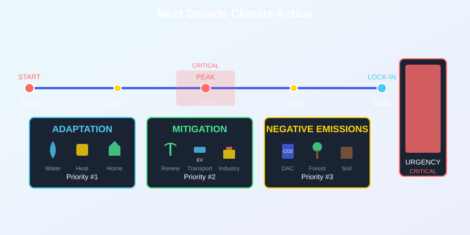

The 1.5°C target is lost, but the climate fight is far from over. The next decade (2025-2035) will determine whether we face manageable crisis or catastrophic collapse. Here's what effective climate action looks like in our new reality.
NEW MISSION: Prevent Catastrophe While Building Resilience
With 43.5 billion tons CO2 projected for 2026 and emissions peaking only after 2030, we must shift from prevention to dual strategy: damage limitation + adaptation.
The Emissions Reality: 2025-2035
Understanding the emissions trajectory is crucial for effective action in the coming decade.
- 2025-2030: Emissions rise to 45-47 billion tons CO2
- 2030-2035: Slow decline begins, reaching 40-42 billion tons
- 2035-2040: Accelerating decline if policies work
- Critical window: 2025-2035 determines long-term trajectory
The 10-Year Window
The decisions and investments made between 2025-2035 will lock in emissions pathways for decades. Every major infrastructure investment during this period has 30-50 year consequences.
Priority 1: Climate Adaptation & Resilience
With warming now inevitable, adaptation becomes equally important as mitigation.
- Water security - drought-resistant agriculture, water recycling
- Heat infrastructure - cooling centers, heat-resistant buildings
- Coastal protection - sea walls, managed retreat, ecosystem restoration
- Food system resilience - diverse crops, local production, storage
Adaptation Timeline Critical
Adaptation measures take 5-10 years to implement. Starting in 2025 means readiness for 2030-2035 impacts. Delaying until 2030 means facing unprepared climate disasters.
Priority 2: Smart Mitigation Strategy
While 1.5°C is lost, preventing 3°C remains crucial. Mitigation must focus on high-impact, realistic strategies.
- Coal phase-out - eliminate coal by 2030 in developed countries
- EV acceleration - 50% of new vehicle sales electric by 2028
- Building retrofits - deep energy efficiency for 25% of buildings
- Industrial decarbonization - carbon capture for heavy industry
The 50% Solution
Focusing on the 50% of emissions that are most reducible (power, transport, buildings) can prevent the worst outcomes while buying time for harder sectors.
Priority 3: Negative Emissions at Scale
"Overshoot" scenarios require massive negative emissions deployment - but this comes with difficult trade-offs.
- Direct Air Capture - needs $100 trillion+ investment by 2050
- Bioenergy with CCS - massive land use competition
- Reforestation - limited by land availability and water
- Soil carbon sequestration - potential but scale-limited
The Land Use Dilemma
Large-scale negative emissions require land equal to multiple countries. This creates impossible choices between food, forests, and carbon removal.
Individual Action: The 2025-2035 Strategy
Individual action evolves from prevention to building resilient communities while continuing emissions reduction.
- Community resilience - local food, water security, mutual aid networks
- Political advocacy - pushing for adaptation infrastructure
- Climate migration preparation - understanding and preparing for relocation
- Skill development - learning climate-relevant skills
The Personal Adaptation Plan
Every household needs a climate adaptation plan: water storage, food security, heat protection, and evacuation routes. Individual preparedness builds community resilience.
Business Transformation: Climate-Ready Economy
Businesses must transform from carbon reduction to climate resilience and adaptation services.
- Adaptation technology - heat-resistant materials, water systems
- Resilience services - climate risk assessment, adaptation planning
- Migration support - climate relocation services, new infrastructure
- Food system innovation - drought-resistant crops, vertical farming
The Climate-Ready Business
Businesses that ignore adaptation face existential threats. Those that embrace climate resilience will dominate the 2030+ economy.
Government: From Regulation to Resilience
Government priorities must shift from emissions regulation to massive adaptation investment.
- Adaptation infrastructure - sea walls, water systems, heat networks
- Managed retreat programs - planned relocation from high-risk areas
- Food security reserves - strategic food and water stockpiles
- Climate migration policy - legal frameworks for climate displacement
The Trillion-Dollar Question
Adaptation requires $1-2 trillion annually by 2030. The question isn't whether we'll pay - it's whether we'll pay proactively or reactively.
Global Cooperation: The New Climate Diplomacy
With 1.5°C lost, international cooperation must focus on managing the climate crisis rather than preventing it.
- Climate refugee agreements - legal frameworks for displacement
- Adaptation finance - funding for vulnerable nations' adaptation
- Technology sharing - adaptation technology transfer
- Crisis coordination - global climate disaster response
The Climate Justice Imperative
Countries that contributed least to climate change face the worst impacts. International cooperation must address this fundamental injustice.
The Next Decade: Our Last Best Chance
2025-2035 is the decade that determines whether human civilization adapts successfully or collapses under climate pressure. The choices we make now echo for centuries.
The Decade of No Return
This isn't hyperbole - infrastructure and policy decisions made 2025-2035 lock in emissions pathways for 50+ years. There is no coming back from these choices.
Your Role in the Critical Decade
Individual action evolves from personal carbon footprints to building resilient communities, advocating for adaptation, and preparing for the climate reality we now face.
Track the Critical Decade
Visit our live carbon counter to watch the 43.5 billion tons accumulate in 2026. Your actions during this critical decade help determine whether we face 2°C or 3°C warming.
We've lost 1.5°C, but we haven't lost everything. The next decade determines whether future generations inherit a damaged but livable planet, or an unlivable hellscape. Your choices matter more than ever.